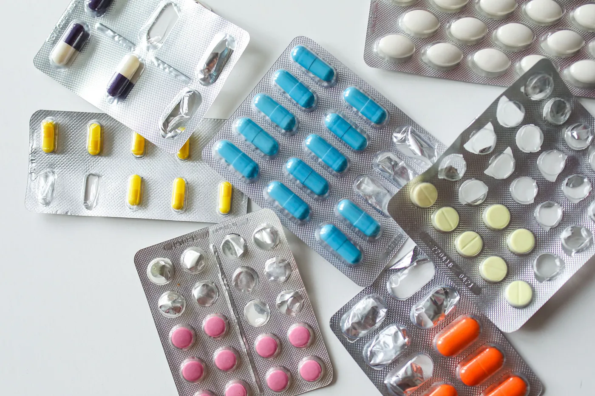
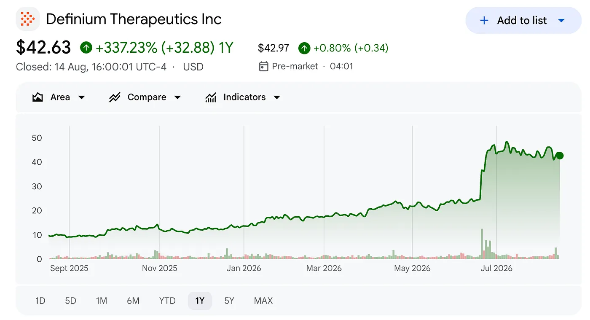
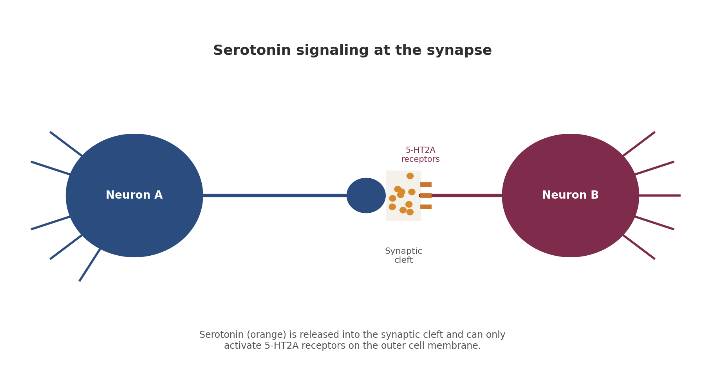
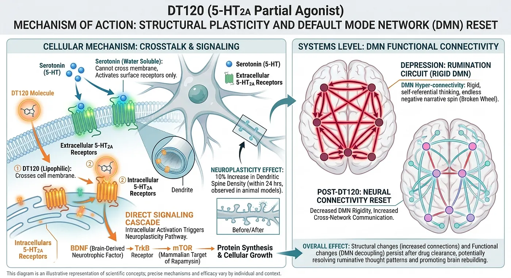
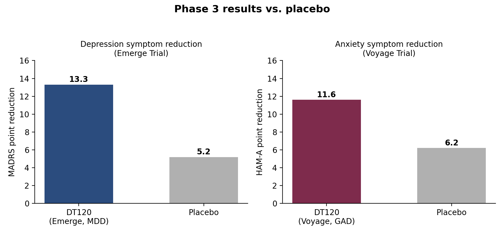

The Six-Hour Cure vs.
The Lifetime Prescription
How Definium Therapeutics is rewriting the economics of psychiatry

One tablet. Six hours. A brain that rebuilds itself.
While SSRIs keep 50 million Americans on a hamster wheel of daily pills, Definium's DT120 just posted Phase 3 data so strong that every single analyst on Wall Street rates it a Buy — and the stock has already run 1,000%.
Sarah has been on Zoloft for eleven years. Starting at 25 milligrams, then 50, and then 100. And when the numbness came — unable to cry at her mother's funeral, the lack of libido, the 30 pounds weight gain — her psychiatrist added Wellbutrin. Then Buspar. Then lithium for just a few months, and a disastrous experience. At the age of 34, Sarah took four pills every day just to be able to feel "functional melancholy" — get up from bed, answer some emails. She could not be happy anymore, and she did not even know why.
This is the tragedy of modern psychiatry. We spend around $15 billion on the maintenance business. On average, each person taking SSRIs consumes about 730 pills per year, every year, usually for decades. The drugs work — at least for some patients and partially — but they are not curing depression. They treat its symptoms, manage it. And the reason for that comes back to a simple truth: antidepressants do not heal the brain. They irrigate it.
Definium Therapeutics, formerly known as MindMed, bets everything on a radically new technology. Its lead drug is DT120 ODT, 100 microgram orally disintegrating tablets of lysergide D-tartrate — a partial agonist at the 5-HT2A serotonin receptor. Once it is consumed, the patient spends about six hours in a controlled clinical environment. According to two completed Phase 3 trials, the brain starts to transform within days.
The stock market has noticed. DFTX rose by 244% this year and by 1,000% over the last three years. It trades at around $46 with a $6.13 billion market cap, and no revenue from the product. Seventeen analysts cover the stock; all of them give a Buy rating. What Wall Street is buying is not another pill. It is a completely different physics of healing.

How regular antidepressants actually work — and why they take forever
In order to explain why DT120 is unique, you first have to understand how antidepressants like Prozac, Zoloft, or Lexapro work. They all fall into one group: SSRIs — selective serotonin reuptake inhibitors.
Inside the brain, neurons release chemicals known as neurotransmitters into the microscopic space between cells. Serotonin is one such neurotransmitter. Normally SERT — a specialised protein — reabsorbs it back into the cell that released it, like a vacuum cleaner clearing the mess. SSRIs block this process. Serotonin spends extra time outside the neuron. Over four to six weeks, the brain is nudged, through a very complex and slow process, into repair mode — involving BDNF growth factor and its receptor TrkB.

The problem with that mechanism is that it is indirect. The drug doesn't flip the repair switch; it simply raises serotonin levels and hopes the brain notices. This is insufficient in many cases, especially in chronic and treatment-resistant depression, where indirect action cannot reverse the actual structural changes caused by the illness.
And there are structural changes. Depression alters the architecture of the brain. The branches of neural cells get weaker. Connections between brain cells degrade. Synapses deteriorate. SSRIs essentially hold the brain in place. They keep chemical levels stable and prevent further decline, but they do not restore the damaged cellular architecture. That is why people take them for years, even decades. They manage symptoms without fixing the underlying issue.
DT120: stepping inside the brain
DT120 is a 5-HT2A partial agonist. Serotonin, the neurotransmitter your body makes naturally, is water soluble. It cannot pass through the lipophilic membrane of the cell. So it activates only the receptors present on the external surface of neurons. It knocks on the door.
The lysergide component is lipophilic. It crosses the cell membrane and activates the 5-HT2A receptors inside neurons — the ones serotonin can never reach.
From there it triggers a direct signalling cascade: BDNF → TrkB → mTOR. The mTOR pathway regulates protein synthesis and cellular growth. In animal models, dendritic spine density increases by 10% within 24 hours of administration. Dendritic spines are the small structures neurons use to connect to each other. More spines mean more connections. The brain rebuilds itself.
DT120 also disrupts the neural circuit of rumination. Neuroscientists identified the default mode network (DMN), or "self" network, in the brain. In depression it becomes a broken wheel, endlessly spinning the story of a person's life in a negative light. Neuroimaging shows that psychedelic compounds like DT120 reduce the rigidity of DMN connectivity while increasing communication with other brain networks. These structural changes persist after the drug has cleared the bloodstream.
When lysergide binds to the 5-HT2A receptor, an extracellular loop folds over it like a cap, trapping the compound inside the receptor. That is why six hours of subjective effects yield weeks of benefit. The brain got renovated. Where SSRIs maintain steady chemistry day by day and manage symptoms without rebuilding circuits, DT120 does the work once — and effectively.

Phase 3 results
The Emerge Trial (MDD). 149 patients on a single dose. MADRS depression scores fell by 13.3 points versus 5.2 for placebo — a mean difference of 8.1 (p<0.0001). Efficacy was observed by Week 1 and maintained through Week 12. CEO Rob Barrow called it "an unprecedented and highly differentiated efficacy."
The Voyage Trial (GAD). 214 patients showed an 11.6-point HAM-A reduction compared to 6.2 for placebo. Effect size of 0.81 — one of the largest ever seen in psychiatry. Separation from placebo was evident on Day 2.

99% of side effects are mild to moderate, occurring only during the dosing day and clearing up quickly. One six-hour medically supervised session. No daily tablets. No sexual dysfunction. No weight gain. No emotional blunting.
The pipeline: more than one drug
Definium has constructed a comprehensive pipeline on the same platform. DT120 alone runs across five Phase 3 trials.
Four active Phase 3 studies with another underway is exceptional for a pre-revenue company. Alongside them, DT402 — the R-enantiomer of MDMA — is in Phase 2a development for autism spectrum disorder. First patient dosed in 2025; data expected in 2026. Assuming the mechanism works as predicted, the platform may extend to PTSD, substance use disorders and other difficult-to-treat indications.
The investment case
The traditional pharma investor craves recurring revenue. Definium offers the exact opposite — a single-shot intervention that might be repeated after months. The stock has fluctuated between $8.70 and $49.70 over a year. Short interest sits at 10.94%, down 26.68% month-over-month as the naysayers fold.
DT120 is going to need regulated clinical infrastructure — therapists, dedicated settings, integration training. Definium is building a session-based business, not just a molecule. And should it get approval, all it needs to do is reach the millions who have run through SSRI trials and still wake up every morning puzzled why happiness didn't come knocking.
Definium was MindMed before January 12, 2026. The rebranding signals the move to a late-stage pharma company with FDA Breakthrough Therapy designation. There are 45+ psychedelic companies worldwide; only a few have reached Phase 3. Definium is one of the most advanced.
All 17 analysts covering DFTX have a Buy or Strong Buy rating. No Holds. No Sells. The average price target is $60–$62, roughly 30% upside. The lowest target is $25 — reasonable only if the FDA turns it down. The highest is $75, set by Baird and Piper Sandler after the Emerge data.
Stifel Nicolaus raised its target from $30 to $60 on the MDD data, calling it an opportunity worth at least $4 billion in peak revenue. Needham went to $66. Leerink Partners to $52. These are not minor adjustments. This is recalibration around blockbuster potential.
It is a binary outcome, but with asymmetric potential on the positive side. The FDA can reject the drug. The company will continue burning cash. With a beta of 2.26, there will be plenty of volatility. But with $1.08 billion in cash, Definium is well financed. With four Phase 3 studies, there are several chances for success. Breakthrough Therapy designation means an expedited pathway.
If DT120 is approved for depression or anxiety, the market opportunity is enormous. More than 50 million Americans suffer from these conditions, and nearly a third of them find existing drugs ineffective. That would open an entirely new market — single-dose, session-based therapy for psychiatric disorders.
In an industry optimised for lifelong prescriptions, the most disruptive innovation is the product that requires a person to come once and leave changed.
For patients like Sarah, there will be one morning, one pill, and six hours to rebuild the brain from the inside out. That is not how pharmaceutical companies are supposed to work. That is exactly why it might.
Rating: Buy. The science is solid. The pipeline is strong. The analyst consensus is unanimous. And even after a 1,000% rally, the stock has room to run if the FDA agrees that this is not just a better antidepressant, but a completely different kind of medicine.